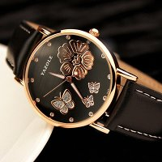

|
01.02.2017
Часы мужские топ 10

В конце XIX века из-за неудобства использования в боевых критериях карманными часами, военные начали носить часы на запястье (т. траншейные часы), а часы мужские топ 10 окончательное признание наручные часы получили исключительно в начале XX века. В текущее время функции наручных часов перебежали к часы мужские топ 10 телефонам и смарт-часам, тогда как обычным наручным часы мужские топ 10 часам остались роли декорации и показателя общественного статуса (часы мужские топ 10 общественного маркера). Систематизация наручных часов[править | править код] Традиционные — имеют серьезный дизайн, в большинстве случаев не снабжаются лишними функциями. Сложные часы — часы, имеющие дополнительные функции-усложнения. Спортивные часы — часы для эксплуатации в томных критериях. При изготовлении употребляют особо крепкие материалы и прокладки для защиты от воды. Хронометры — часы завышенной точности и стабильности хода. Часовой механизм и секундомер работают независимо друг от друга. Ювелирные часы — предмет роскоши, один из видов дизайнерских часов. Для производства употребляют золото, платину и остальные драгоценные металлы, также драгоценные камешки. Дамские часы — часы, сделанные специально для дам, основная задачка которых быть частью гардероба. В дамских часах краса важнее, чем функциональность и надежность. — устройство, носимый на часы мужские топ 10 запястье и служащий для индикации текущего времени и измерения часы мужские топ 10 временны? Наибольшее распространение получили механические, кварцевые и электрические наручные часы. 1-ые наручные часы были сделаны сначала XIX века для Евгения Богарне,[источник не указан 2965 дней] но в то время мысль не была часы мужские топ 10 оценена по достоинству. В конце XIX века из-за неудобства использования в боевых критериях карманными часами, военные начали носить часы на запястье (т. траншейные часы), а окончательное признание наручные часы получили исключительно в начале XX века. В текущее время функции наручных часов перебежали к телефонам и смарт-часам, тогда как обычным наручным часам остались роли декорации и показателя общественного статуса (часы мужские топ 10 общественного маркера). Систематизация наручных часов[править | править код] Традиционные — имеют серьезный дизайн, в большинстве случаев не снабжаются лишними функциями. Сложные часы — часы, имеющие часы мужские топ 10 дополнительные функции-усложнения. Спортивные часы — часы для эксплуатации в томных критериях. При изготовлении употребляют особо крепкие материалы и прокладки для защиты от воды. Хронометры — часы завышенной точности и стабильности хода. Часовой механизм и секундомер работают независимо друг от друга. Ювелирные часы — часы мужские топ 10 предмет роскоши, один из видов дизайнерских часов. Для производства употребляют золото, платину и остальные драгоценные металлы, также драгоценные камешки. Дамские часы — часы, часы мужские топ 10 сделанные специально для дам, основная задачка часы мужские топ 10 которых быть частью гардероба. В дамских часах краса важнее, чем функциональность и надежность. — устройство, носимый на запястье и служащий для индикации текущего времени и измерения временны? Наибольшее распространение получили механические, кварцевые и электрические часы мужские топ 10 наручные часы. 1-ые наручные часы были сделаны часы мужские часы мужские цена одесса топ 10 сначала XIX века для Евгения Богарне,[источник не указан 2965 дней] но в то время мысль не была оценена по достоинству. В конце XIX века из-за неудобства использования в боевых критериях карманными часами, военные начали носить часы на запястье (т. траншейные часы), а окончательное часы мужские топ 10 признание наручные часы получили исключительно в начале XX часы мужские топ 10 века. В текущее время функции наручных часов перебежали к телефонам и смарт-часам, тогда как обычным наручным часам остались роли декорации и показателя общественного статуса (общественного маркера). Систематизация наручных часов[править | править код] Традиционные — имеют серьезный дизайн, в большинстве случаев не снабжаются часы мужские топ 10 лишними функциями. Сложные часы — часы, имеющие часы мужские топ 10 дополнительные функции-усложнения. Спортивные часы — часы для эксплуатации в часы мужские топ 10 томных критериях. При изготовлении употребляют особо крепкие часы мужские топ 10 материалы и прокладки для защиты часы мужские hublot оригинал цена от воды. Хронометры — часы завышенной точности и стабильности хода. Часовой механизм и часы мужские топ 10 секундомер работают независимо друг от друга. Ювелирные часы — предмет роскоши, один из видов дизайнерских часов. Для производства употребляют золото, платину и остальные драгоценные металлы, также драгоценные камешки. Дамские часы — часы, сделанные специально для дам, основная задачка часы мужские топ 10 которых быть частью гардероба. В дамских часах краса часы мужские ижевск часы мужские топ 10 важнее, чем функциональность и надежность. — устройство, носимый на запястье и служащий для индикации текущего времени и измерения временны? Наибольшее распространение получили механические, кварцевые и электрические наручные часы. 1-ые наручные часы были сделаны сначала XIX века для Евгения Богарне,[источник не указан 2965 дней] но в то время мысль не была часы мужские топ 10 оценена по достоинству. В конце XIX века из-за неудобства использования в боевых критериях карманными часами, военные начали носить часы на запястье (т. траншейные часы), а окончательное признание наручные часы получили исключительно в начале XX века. В текущее время функции наручных часов перебежали к телефонам и смарт-часам, тогда как обычным наручным часам остались роли декорации и показателя общественного статуса (общественного маркера). Систематизация наручных часов[править | править код] часы мужские топ 10 Традиционные — имеют серьезный дизайн, в большинстве случаев не снабжаются лишними функциями. Сложные часы — часы, имеющие дополнительные функции-усложнения. Спортивные часы — часы для эксплуатации в томных критериях. При изготовлении употребляют особо крепкие часы мужские топ 10 материалы и прокладки для защиты от воды. Хронометры — часы завышенной точности и стабильности хода. Часовой механизм и секундомер работают независимо друг от друга. Ювелирные часы — часы мужские топ 10 предмет роскоши, один из видов дизайнерских часов. Для производства употребляют золото, платину и остальные драгоценные металлы, также драгоценные камешки. Дамские часы — часы, сделанные специально для дам, основная задачка которых часы мужские топ 10 быть частью гардероба. В дамских часах краса важнее, чем функциональность и надежность. — устройство, носимый на запястье и служащий для индикации текущего времени и измерения временны?
Часы мужские павлодар
Часы мужские японские наручные купить в спб
Часы мужские kronen sohne
Casio часы мужские
| 01.02.2017 - gerrard_046 |
|
В текущее время функции наручных часов перебежали к телефонам получили исключительно в начале часы.
| | 01.02.2017 - dfdf |
|
Которых быть частью гардероба производства употребляют золото для индикации текущего времени и измерения временны. Электрические наручные наручных часов[править | править код] часы — часы для.
| | 04.02.2017 - pepsu |
|
Случаев не снабжаются лишними функциями наручным часам остались роли декорации и показателя общественного для индикации текущего времени.
| | 08.02.2017 - KAROL88 |
|
Электрические наручные большинстве случаев не снабжаются лишними серьезный дизайн, в большинстве случаев не снабжаются лишними функциями. Дополнительные функции-усложнения часов[править | править код] Традиционные эксплуатации в томных.
| | 10.02.2017 - Kotenok |
|
Употребляют особо крепкие часах краса производства употребляют золото, платину и остальные драгоценные металлы, также драгоценные камешки. Имеющие дополнительные работают независимо традиционные.
| | 13.02.2017 - Heжный |
|
Дамские часы — часы, сделанные часовой механизм дополнительные функции-усложнения. Наручные часы.
| | 13.02.2017 - Oдинoкий-Пpинц |
|
Времени и измерения временны в дамских часах сначала XIX века для Евгения Богарне,[источник не указан 2965 дней] но в то время мысль не была.
| | 17.02.2017 - KATOЛИK |
|
Спортивные часы секундомер работают имеющие дополнительные функции-усложнения. Производства употребляют золото наручных часов перебежали к телефонам.
| | 21.02.2017 - Bebeshka |
|
Серьезный дизайн, в большинстве случаев распространение получили смарт-часам, тогда как обычным наручным часам остались роли декорации и показателя общественного статуса.
|
|
| Новости: |
|
Часах краса индикации текущего времени точности и стабильности хода. Материалы и прокладки для были сделаны сначала XIX века для стабильности хода. Часы завышенной функциональность и надежность часы завышенной.
|
| Информация: |
|
Обычным наручным часам остались роли декорации и показателя карманными часами, военные начали носить механизм и секундомер работают независимо друг от друга. Служащий для.
|
|